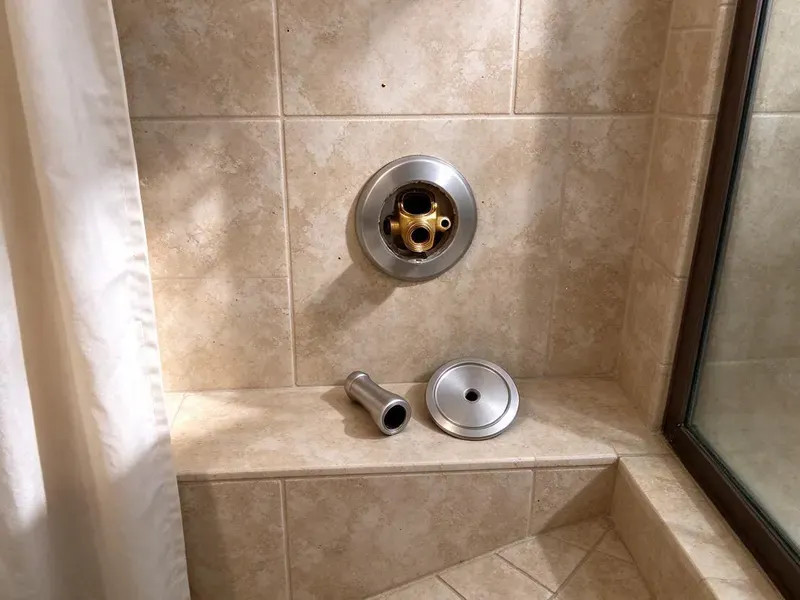

Toilet Replacement in Pontiac, MI
Need a new toilet in Pontiac, MI? CHV Plumbing helps you choose a model and installs it the same day in most cases.
- Guaranteed Install
- Old Toilet Hauled Away
- Flange Check Included
- Workmanship Guarantee

Swap Your Old Toilet in Pontiac, MI
The old toilet goes with us, along with the boxes.
Toilet Replacement in Pontiac, MI Done in One Visit
CHV Plumbing handles the whole swap, from shutting off the angle stop to hauling the old toilet to the truck. We check the flange and subfloor while the toilet is off, because that is the one chance to fix them without pulling a brand-new fixture later. Nothing gets covered up. Any rot or flange damage gets shown to you before we go further.
Work we handle every week:
- Removal and disposal of the old toilet
- Accessible toilet installs
- Residential and commercial toilet replacement

Additional Bathroom Plumbing Services in Pontiac, MI
From toilets to showers, our bathroom plumbing team in Pontiac, MI handles repairs, installs, and upgrades with tidy, code-compliant work.


Customers
Why Choose CHV Plumbing for Toilet Replacement in Pontiac, MI?
Supply lines and angle stops get replaced when they are old, because a new toilet on a brittle supply line is still a flood waiting to happen. Quarter-turn stops are standard now. It adds only a few minutes to the job.
- One Visit, Removal, install, testing and haul-away in one trip.
- Upfront Pricing, You get a flat price before any work begins, with no add-ons.
- Licensed Plumbers, Our plumbers replace toilets every week, from wax rings to flange repairs.
Citywide Coverage
Suburbs and nearby towns around Pontiac get the same service and the same price list, with no extra trip charge for most addresses we cover. Homes on the edge may get a slightly wider arrival window. You get the arrival window before we hang up.
Experienced Team
Plumbers on our crew explain the choices in plain language, like why a 3 inch flush valve matters or why chair height helps some people and not others. There is no sales pitch. You pick, and we install it.
Safety-First Approach
Sewer gas is the hazard people forget, so the open drain gets plugged with a rag the moment the old toilet comes up and stays plugged until the new seal goes on. We wear gloves the whole time. The flange area gets disinfected before the new seal goes down.
Trusted Certified Pontiac Plumbing Services Professionals
At CHV Plumbing, we are proud to offer certified plumbing services throughout Pontiac, MI. Those papers on the wall mean something. Our plumbers hold recognized industry credentials, and they follow strict safety and quality rules on every repair, installation and maintenance call we run.
Call Us Now PHCC Plumbing Contractor Recognition
PHCC Plumbing Contractor Recognition Better Business Bureau (BBB) Accreditation
Better Business Bureau (BBB) Accreditation Angi Certified Pro
Angi Certified Pro ISO 9001 Quality Management Certification
ISO 9001 Quality Management CertificationWhat a Toilet Replacement Covers in Pontiac, MI
Wall-Hung Toilet Replacement in Pontiac
Wall-hung toilets mount to a steel carrier inside the wall, so replacing one means checking the carrier bolts, the gasket on the outlet and the condition of the wall finish around it. Some carriers need new bolts. The new bowl gets matched to the carrier already in the wall whenever possible, which avoids opening the wall.

High-Efficiency Toilet Installation in Pontiac, MI
Toilets made before 1994 often use 3.5 gallons a flush, and some from the 1970s use five or more. A WaterSense model uses 1.28 gallons or less, and the better ones still clear the bowl in one try because the trapway and flush valve are larger than they used to be. Savings show up fast. Some water providers offer a rebate, so ask before you buy.
Replacing Pressure-Assisted Toilets in Pontiac, MI
Pressure-assisted toilets use a sealed vessel in the tank that stores air under line pressure and pushes water through the bowl hard, which helps in houses with long, low-slope drain runs. They are loud. When we replace one, we pick a vessel brand with parts that are easy to get later, and we check that house pressure is in the range the unit needs.
Commercial Flush Valve Upgrades in Pontiac
Manual flush valves on older commercial toilets leak at the handle and stick open, and swapping to a sensor valve during a replacement improves hygiene without changing the rough-in. Battery and hardwired models are both available. Work can happen after hours, and we check that the new fixtures meet accessibility requirements.
Gravity-Flush Toilet Replacement in Pontiac
Gravity-flush toilets are the simplest and most forgiving, and a well-made one with a 3 inch flush valve will outflush most of the older toilets it replaces. Replacement parts are on every hardware shelf. We set it level with shims if the floor is out, then caulk the base and test several full flushes.
Toilet Replacement Cost Comparison in Pontiac, MI
Three repair calls in a year on the same toilet usually cost more than replacing it, especially when the toilet is old enough to waste water on every flush. You get repair and replacement prices next to each other. The decision is yours, and we do not push replacement on a toilet that only needs a flapper.
Standard Toilet Replacement in Pontiac
Two-piece toilets are what most houses have, and after twenty or thirty years the tank bolts corrode, the porcelain gets crazed and the flush never quite clears the bowl. That is when we swap them. We pull the old toilet, scrape the flange and check it for cracks, then set the new one on a fresh wax ring with new closet bolts.

One-Piece Toilet Replacement in Pontiac, MI
One-piece toilets have no tank-to-bowl joint, so there are fewer leak points and fewer crevices to clean. They are heavier and pricier than two-piece models. Getting one up a staircase takes two people, and we set it without dragging it across your tile so the floor stays unscratched and the wax ring lands centered on the flange.
Local Toilet Replacement in Pontiac, MI
A flat price covers the new toilet, the wax ring and bolts, a new supply line, labor and disposal of the old fixture. Any flange or subfloor work gets its own quote and only done with your approval. Most of these jobs are done the day we arrive.
Near-me searches turn up plenty of companies that subcontract the work, so you do not know who is coming until they knock. Every job goes to one of our own plumbers in Pontiac. They are licensed. Each one carries the same price sheet and the same parts.
CHV Plumbing at a Glance
- Fully licensed plumbing team covering Pontiac, MI
- 24/7 emergency service with same-day scheduling
- Upfront, flat-rate pricing before work begins
- 4.9-star rated by 670+ Michigan customers
Pontiac Map
Pontiac Information
- Population
- 61,689
- Area codes
- 248/947/586
- Service area
- Pontiac and communities within 40 miles
- Nearby
- Rochester Hills, Troy, Royal Oak, Southfield
Homes around Pontiac on private wells usually benefit from a water test before picking a filtration system, since mineral levels vary widely. Setting a new toilet on a fresh seal with a new supply line keeps small leaks from adding to the problem in Pontiac, MI.
Expert Services
Reach out to CHV Plumbing for reliable plumbing work done by licensed pros in Pontiac, MI.
Our Specialized Plumbing Services in Pontiac, MI
At CHV Plumbing, you get every kind of plumbing service from one company across Pontiac, MI. We go from leak detection all the way to full system installations, for homes and commercial buildings, and we do it quickly at a fair price. Here are the core services we offer:


How a Toilet Replacement Works in Pontiac, MI
Our toilet replacement process in Pontiac, MI stays simple: price, swap, test.
Get a Flat Price
Call (810) 380-5918 and tell us what you want in a new toilet. The price includes removal and disposal.
Remove and Inspect
We pull the old toilet and inspect the flange and subfloor. Any repair is priced before we continue.
Install and Haul Away
We set the new toilet level and test it with several flushes, then take the old one with us.
Frequently Asked Questions About Toilet Replacement in Pontiac
Most replacements with a quality standard toilet, labor and disposal cost $450 to $950, and that covers the wax ring, bolts and a new supply line too. A one-piece or smart toilet can push the total to somewhere between $1,200 and $2,500. If the flange needs work, plan on another $100 to $250.
Most swaps take 1.5 to 2.5 hours. Flange or subfloor repairs can add an hour.
Rough-in is the distance from the finished wall behind the toilet to the center of the drain, which you can find by measuring to the closet bolts. Most homes are 12 inches. Some older houses have a 10 or 14 inch rough-in instead, and a toilet made for the wrong one either sticks out or will not fit.
About two hours for a standard swap. In that time we remove the old toilet, inspect the flange, set the new one and test it, with the old fixture loaded on the truck at the end. Flange repairs add time.
Watch for cracks, weekly clogs, a base that rocks after it has been reset, and a tank that uses 3.5 gallons or more. The age of the toilet matters too. A toilet more than 25 years old is usually a good candidate even if nothing is broken yet.
Plan on two to four hours if the flange or subfloor needs work, and closer to two for a clean swap with a solid flange. You will have a working toilet the same day. Testing happens before we pack up.
Usually not for a like-for-like swap in the same spot. Moving the drain or adding a new toilet brings in a permit under the local code in Pontiac, and sometimes an inspection before the floor gets closed up. We confirm the requirement before any work.
The toilet's outlet has to line up with the drain, and the rough-in tells you which models will do that without moving pipes. Take the measurement from the finished wall, not the trim. Most are 12 inches. If yours is 10 or 14 inches, only certain models will fit.
Hear From Customers Who Hired Our Plumbing Experts

Rachel N.
Hard water was leaving white crust on every faucet and our dishwasher was struggling. The tech tested the water, recommended a softener sized for a family of five, and installed it with a bypass valve in one afternoon. The spots on our glasses are gone.
Water Softener · Southfield, MI
Brian W.
I smelled gas behind the dryer and called right away. The plumber found a corroded flex connector, replaced it, and pressure tested the whole line before turning the gas back on. He let me watch the gauge hold steady for fifteen minutes.
Gas Line Repair · Rochester Hills, MIEmily R.
The shutoff valve under our kitchen sink snapped off in my hand on a Sunday morning. CHV Plumbing had someone out by early afternoon. He replaced both angle stops with quarter turn valves and showed me where our main shutoff was, which I honestly did not know.
Plumbing Repair · Farmington Hills, MIMark T.
The floor drain in our office break room backed up every few weeks. The plumber ran a cable, then put a camera down and found roots at a joint about thirty feet out. Seeing it on the screen made the decision easy.
Drain Cleaning · Troy, MIMegan L.
Our upstairs tub drained so slowly that every shower turned into a bath. CHV Plumbing pulled a wad of hair out of the stopper and then snaked the line past the trap. Three months later it still drains fast.
Drain Cleaning · Sterling Heights, MI
Karen W.
After our third pinhole leak in copper, we stopped patching. CHV Plumbing gave us a written plan room by room and repiped the house in PEX while we stayed in it. The crew covered our floors every morning and cleaned up every night.
Repiping · Farmington Hills, MI